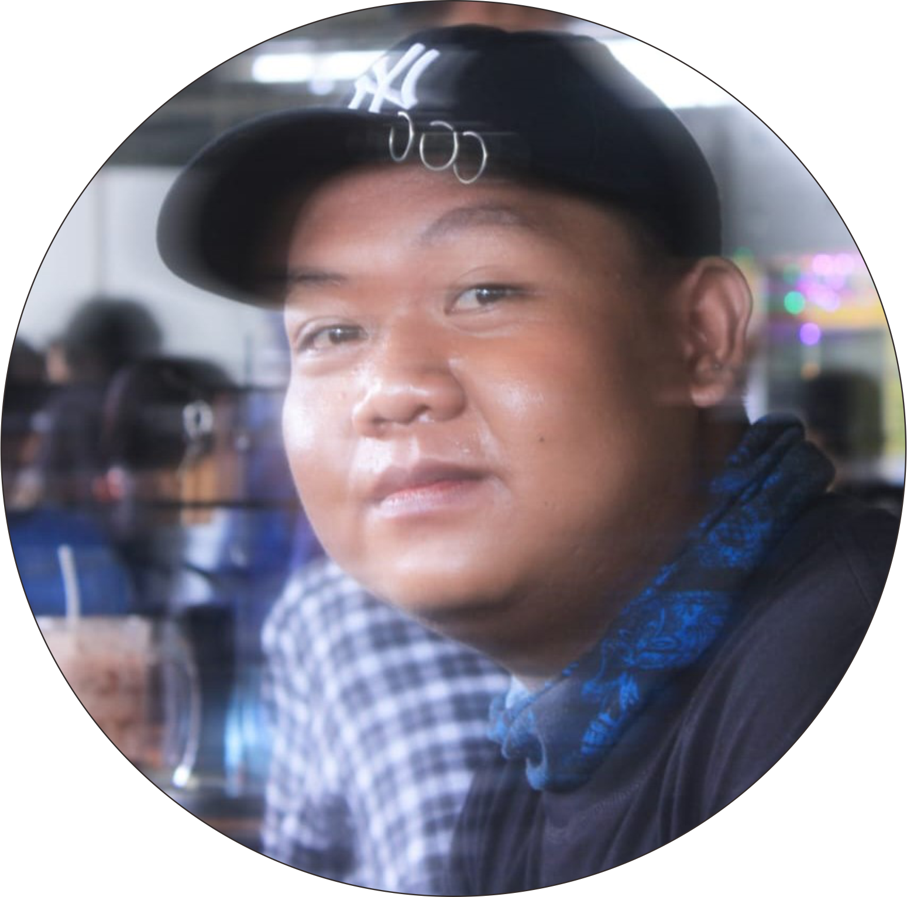

Portofolio

ATALARIK SATRIA DINATA
Profil
Halo, nama saya Atalarik Satria Dinata, saat ini saya sedang menempuh pendidikan di Universitas Dinamika di Kota Surabaya, Indonesia. Saya memilih jurusan Sistem Informasi karena saya memiliki minat yang besar dalam teknologi dan ingin berkontribusi dalam bidang tersebut di masa depan.
Selama kuliah, saya aktif dalam kegiatan organisasi dan kegiatan sosial di kampus. Saya juga mengikuti beberapa pelatihan dan seminar untuk meningkatkan pengetahuan dan keterampilan saya. Selain itu, saya juga mencoba untuk terlibat dalam proyek-proyek IT yang menantang, sehingga dapat memperluas wawasan dan pengalaman saya di bidang teknologi. Saya berharap dapat mengembangkan diri saya secara lebih baik selama kuliah dan menjadi seorang profesional yang handal dan mampu memberikan manfaat bagi masyarakat.
Pendidikan
SD Sidotopo VIII Surabaya
SMPN 37 Surabaya Surabaya
SMK Teknik PAL Surabaya, Teknik Komputer dan Jaringan
PIKTI ITS, D1 Teknik Informatika
Pengalaman
Magang di PT PAL Surabaya, IT Network & Support
Magang di ITS Teknik Sipil Surabaya, IT Support
Sertifikasi MIKROTIK, Junior Network Administrator
Kontak
WA : 0895340079439
Email : atalarik.satria77@gmail.com
Instagram : atalariksatrd